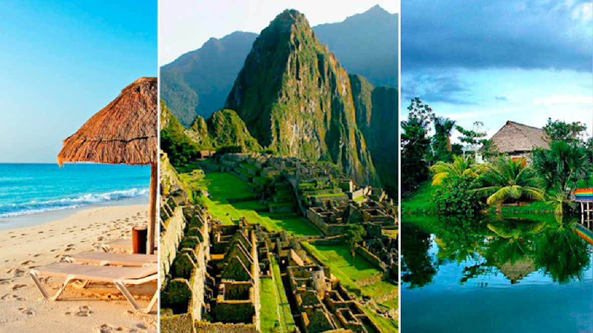
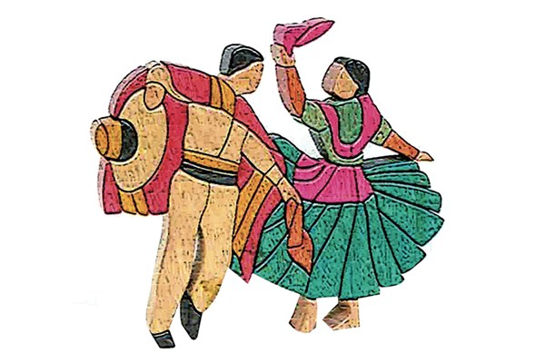

| En nuestro país, encontramos una diversidad de expresiones culturales y artísticas. Si bien todos somos peruanos, cada región tiene su propia forma de expresarse en el habla, en la comida, en sus danzas, en sus fiestas. |  | |
|  | Y si de celebrar se trata, el espíritu festivo sale a relucir con sus coloridas danzas. Para muestra, un botón: la marinera. Esta es una danza que expresa la gracia y la coquetería de la mujer peruana ante el intrépido varón que trata de conquistarla. Existe una marinera norteña, una marinera limeña y una marinera serrana. | |
| Por esto y mucho más, el Perú es un país rico en tradiciones que se manifiestan en todo su territorio. |
|